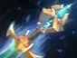

Arc Lightning
молния перескакивает между врагами. Удобна для зачистки волн.

Мид — позиция 2
магический урон с большой дистанции.
наносить урон из безопасной позиции, помогать команде ультимейтом и быстро зачищать волны крипов.
используй способности для зачистки крипов, но следи за маной. Не стой впереди команды: Zeus очень уязвим, если враг доберётся до него.
молния перескакивает между врагами. Удобна для зачистки волн.
наносит магический урон, ненадолго оглушает и даёт обзор в области применения.
помогает оторваться от преследователей и мешает врагам атаковать.
наносит урон вражеским героям по всей карте и раскрывает их на короткое время.


